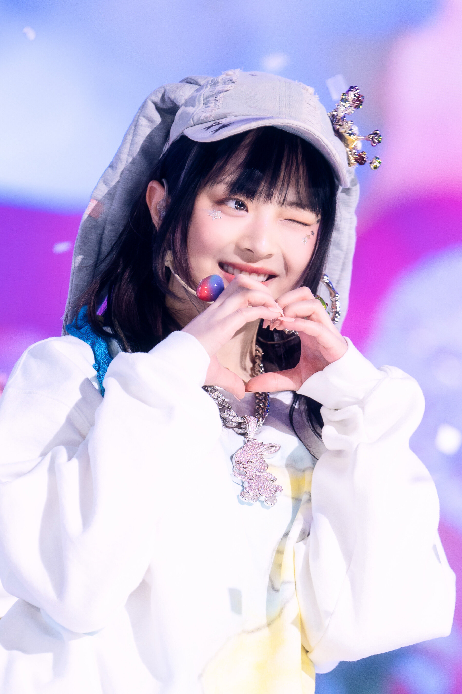
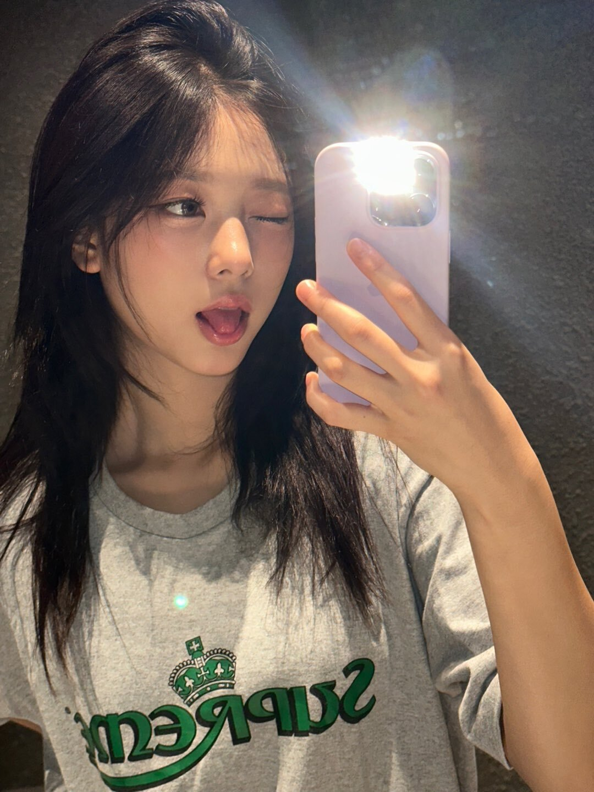
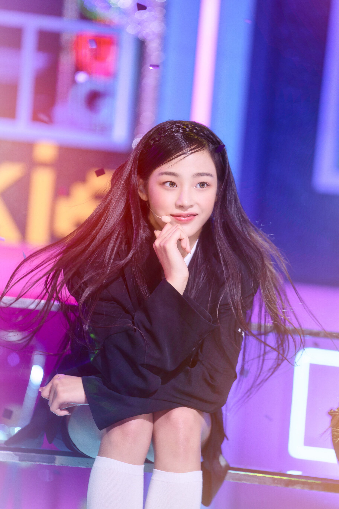
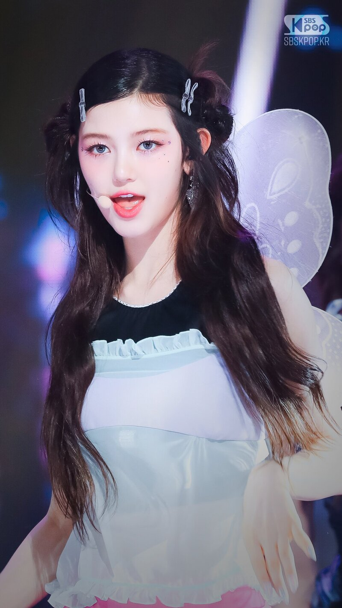
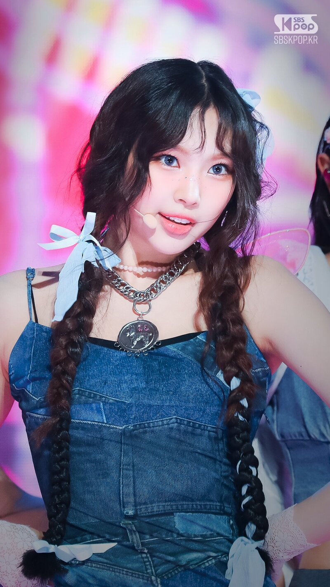

PROFIL NEWJEANS

Dilahirkan dan dibesarkan di Melbourne, Australia, Hanni adalah putri sulung dari orang tua berkebangsaan
Vietnam. Sejak usia muda, ia telah menunjukkan kecintaan yang besar terhadap musik, yang mengarah ke audisinya
untuk 'The Voice Kid Australia' dan bergabung dengan grup penutup tarian Kpop bersama teman-temannya.
Tak lama setelah itu, ia mengikuti 'Plus Global Audition' dan menjadi seorang trainee di bawah naungan Source
Music. Akhirnya, ia bergabung dengan label ADOR, membuka jalan untuk debutnya sebagai anggota NewJeans pada 22 Juli 2022.

Lahir dan dibesarkan di Seoul, Korea Selatan, Haerin lulus audisinya dengan HYBE pada tahun 2020 dan menjadi seorang trainee
di Source Music dan ADOR hingga akhirnya membuat debut resminya pada tanggal 22 Juli 2022. Dikenal karena penampilannya
yang mirip kucing dan daya tariknya, Haerin juga aktif dalam mengikuti endorsement merek solo dan pemotretan. Dia juga
dikreditkan sebagai salah satu penulis lagu untuk lagu-lagu hit NewJeans "NewJeans" dan "Super Shy."

Lahir dan dibesarkan di Chuncheon, Korea Selatan, Minji pindah ke Seoul dan akhirnya mulai berlatih di bawah naungan
Source Music. Setelah itu, karena perubahan internal dalam perusahaan, Minji bergabung dengan label ADOR, yang mengarah
pada debutnya sebagai anggota NewJeans pada tanggal 22 Juli 2022.Selain kegiatan kelompok, Minji juga mengejar usaha solo,
seperti endorsement merek dan pemotretan. Dia juga dikreditkan sebagai salah satu penulis lirik dari lagu pemenang
penghargaan NewJeans, "Ditto."

Meskipun lahir di Australia, Danielle sempat tinggal di Korea di mana ia menjadi model anak-anak dan muncul di acara realitas
bersama keluarganya. Setelah kembali ke Australia, Danielle terus menghadapi tantangan hiburan, seperti festival dan musikal,
sambil mengejar pendidikannya. Dia kemudian kembali ke Korea sebagai trainee idola, akhirnya membuat debutnya sebagai anggota
NewJeans pada 22 Juli 2022.Selain kegiatan grup dengan NewJeans, Danielle juga berpartisipasi dalam banyak endorsement merek
dan kegiatan solo lainnya. Pada Mei 2023, Danielle membuat debutnya di layar lebar sebagai pengisi suara Korea dari karakter
ikonis Ariel, dari film Disney "The Little Mermaid." Dia juga merilis versinya dari lagu "Part of Your World" sebagai bagian
dari soundtrack resmi film tersebut.

Sebelum dikenal luas sebagai maknae NewJeans, Hyein memulai karirnya sebagai model anak-anak untuk berbagai merek dan fashion show.
Dengan nama panggung Yujeong, ia kemudian menjadi anggota grup gadis anak-anak U.SSO Girl, bersama Rora dari BABYMONSTER, hingga
tahun 2018.Pada tahun 2019, Hyein menjadi anggota grup anak laki-laki dan perempuan Play With Me Club dan secara rutin muncul di
berbagai konten Pocket TV di YouTube, di mana ia dapat menampilkan bakatnya dalam bernyanyi, menari, menjadi pembawa acara, dan
bahkan berakting. Dia lulus dari grup sekitar tahun 2021. Setelah itu, Hyein mulai berlatih di bawah naungan ADOR hingga membuat
debut resminya sebagai anggota termuda NewJeans pada tanggal 22 Juli 2022.